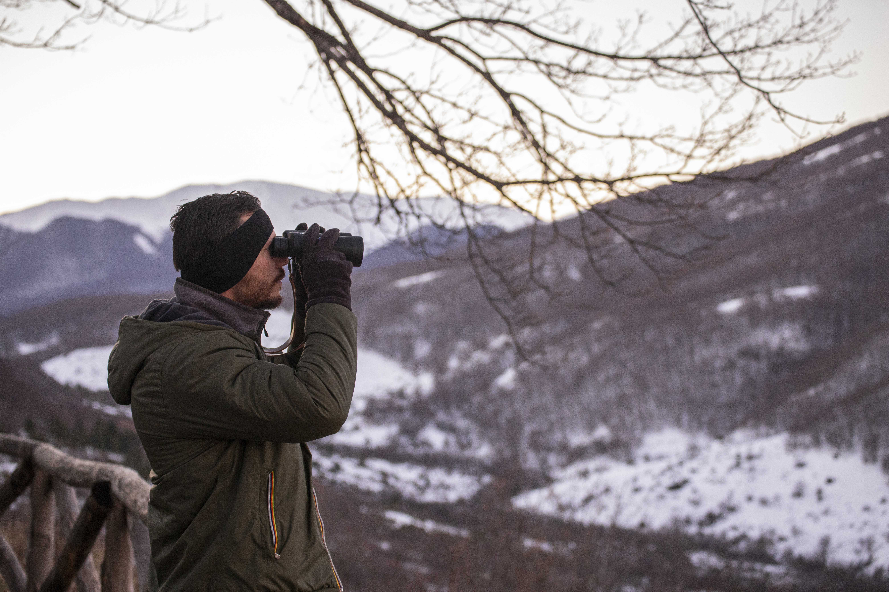
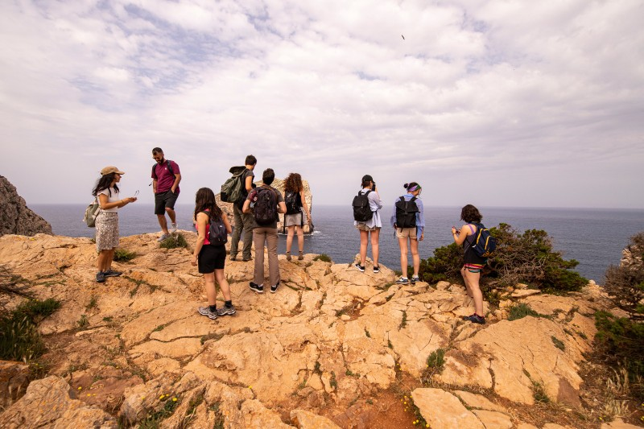
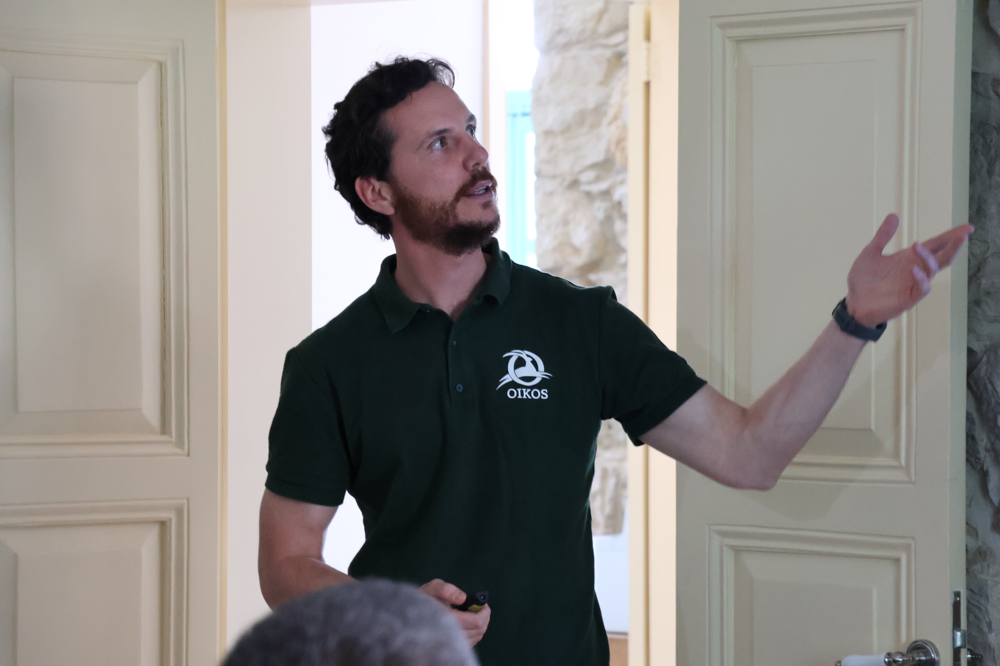
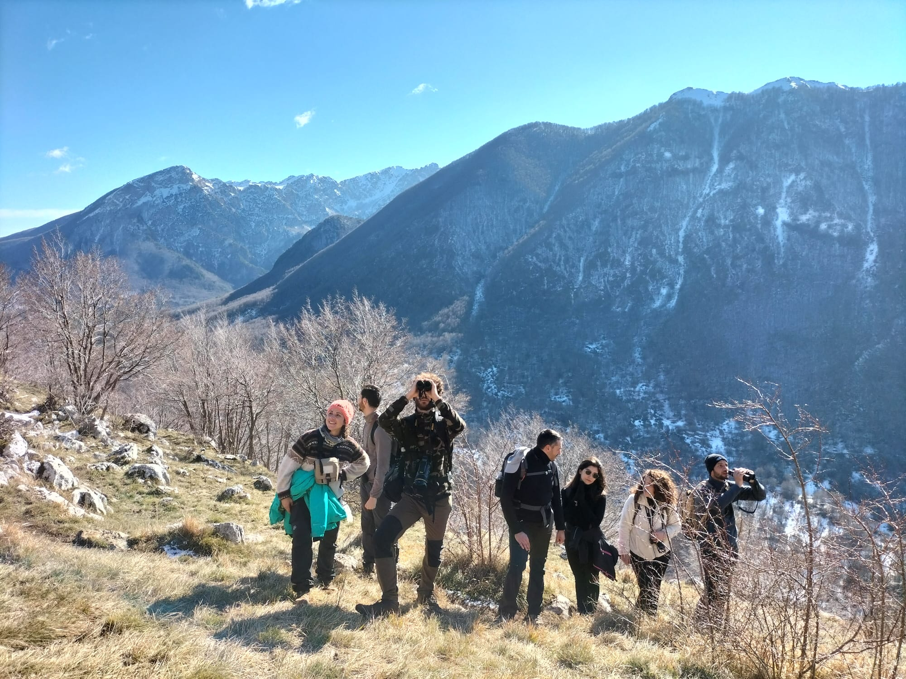
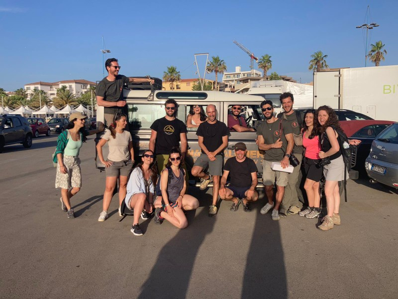
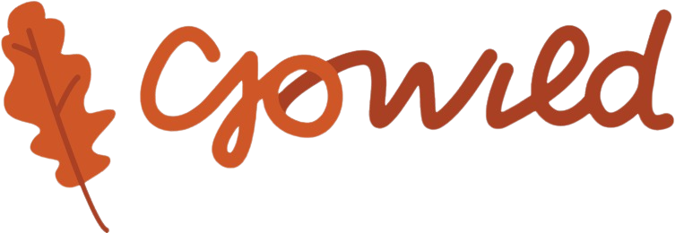
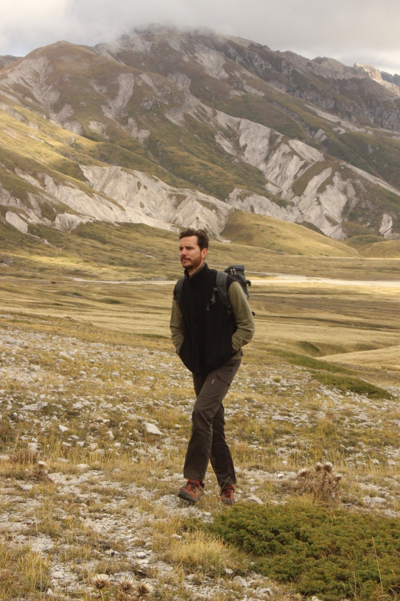

Porto le persone nella natura selvaggia con il rigore di uno scienziato e il cuore di un esploratore.
Mi chiamo Giacomo Cremonesi.
Sono un Biologo di campo e Guida Ambientale.
Metto la mia competenza al servizio del tuo viaggio, per portarti ad appoggiarti alla terra con rispetto e conoscere l'anima autentica dei territori, trasformando il viaggio in uno strumento di scoperta, impatto e crescita personale.
E faccio tutto questo con una sola idea in testa: aiutare le persone a riconnettersi con la Natura, e quindi con sé stesse.

C'è chi viaggia per "staccare la spina", ma spesso torna più disconnesso di prima. Io credo in un approccio opposto: qualcosa di raro, piccolo e accogliente.
Progetto ogni esperienza partendo da dati, mappe e monitoraggi sul campo, perché solo chi conosce davvero la natura sa come attraversarla in punta di piedi.
Qui la Natura non è un'attrazione da visitare, ma uno spazio libero di cui torni a far parte con senso e consapevolezza.
Voglio popolare il mondo di persone proattive, capaci di trasformare la curiosità in azione concreta. Perché solo chi capisce davvero la fragilità della bellezza sa come proteggerla.

Sono un biologo naturalista specializzato in monitoraggio della fauna e gestione delle aree protette. Ho un Dottorato di ricerca, ma la mia vera accademia sono stati i contesti complessi come il Myanmar, il Libano e la Colombia.
Negli anni ho collaborato e collaboro con università e ONG internazionali (come Istituto Oikos) occupandomi di:
Il mio valore per te: Non ti porto semplicemente in un luogo. Ti offro le chiavi di lettura di un biologo per interpretare la complessità della natura. Uso il metodo scientifico per garantirti un'esperienza autentica, basata sulla conoscenza reale e non sui pacchetti preconfezionati.

Cosa significa viaggiare GoWild:
"È un'esperienza dove lasciamo agire di sottofondo il viaggio come strumento di evoluzione, consapevolezza e trasformazione."


Viaggi nella Natura selvaggia, persone affini, impatto reale.
E un casino di emozioni.
Unisce tutte le mie anime: quella da biologo, quella da guida, quella da viaggiatore. È un modo diverso di viaggiare: piccolo gruppo, natura vera, esperienze autentiche.
Esplora, impara, proteggi. Non siamo qui per collezionare timbri sul passaporto o foto da postare, ma per riconnetterci con il ritmo reale della Natura e capire il nostro ruolo nel proteggerla.
Se cerchi la comodità dell'apparenza, non siamo noi. Siamo qui per spogliarci delle maschere e osservare la vita che scorre con il rigore di uno scienziato e il cuore di un esploratore: la natura non è uno spettacolo da ammirare, ma una realtà complessa da abitare profondamente.
Mettiamo la scienza al centro del cammino. Ogni viaggio sostiene concretamente progetti di conservazione e monitoraggio della fauna: la nostra curiosità diventa azione diretta per la tutela della biodiversità.
Non siamo un viaggio di animazione o socialità forzata. Siamo uno spazio sicuro dove ogni indole è accolta: puoi restare in ascolto e connetterti con gli altri in modo spontaneo, senza l'obbligo di apparire "carico" a tutti i costi.
Per vedere davvero la natura bisogna saper sparire. Applichiamo la stessa delicatezza alle relazioni umane, costruendo una community dove il rispetto è la prima forma di conoscenza e dove la forza del gruppo nasce dalla gentilezza dei singoli.
Se cerchi un'evoluzione profonda e la forza di una community di pari che condivide i tuoi valori, sei nel posto giusto. Non siamo semplici compagni di viaggio, siamo persone che hanno scelto di abitare il mondo con consapevolezza.
Hai un'idea di collaborazione, una domanda tecnica o vuoi unirti a una delle prossime spedizioni GoWild?
Non cerco form complicati, preferisco la sostanza.
